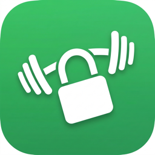

RepKeyは、決めた時間帯にアプリをロックし、その日のワークアウトを終えると解除される習慣づくりアプリです。カメラの前で体を動かすと、AIが回数を自動でカウントします。
カメラ映像は端末上でのみ処理され、写真や動画が保存・送信されることはありません。
不具合のご報告・ご要望・ご質問は、下記メールアドレスまでお気軽にご連絡ください。
よくある質問:
RepKey blocks distracting apps during your lock schedule until you finish a quick daily workout. Exercise in front of your camera and on-device AI counts your reps for you.
Camera frames are processed only on your device. No photos or videos are ever saved or uploaded.
For bug reports, feature requests or questions, please email us at the address below.
FAQ: